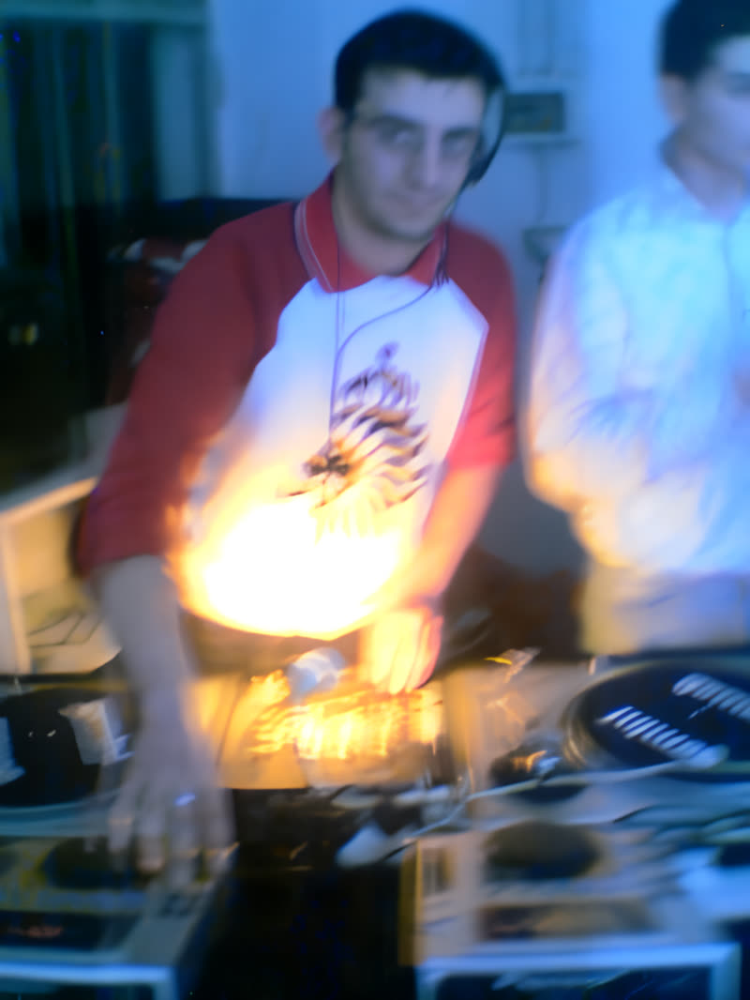
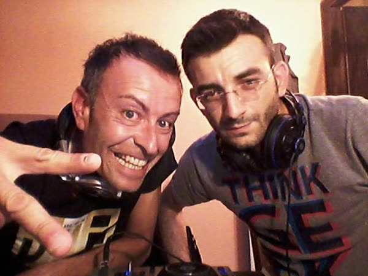
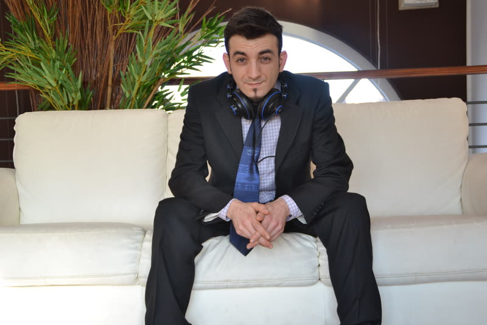
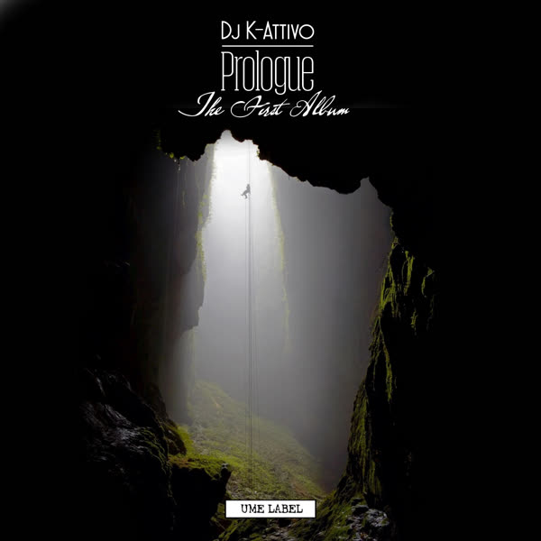
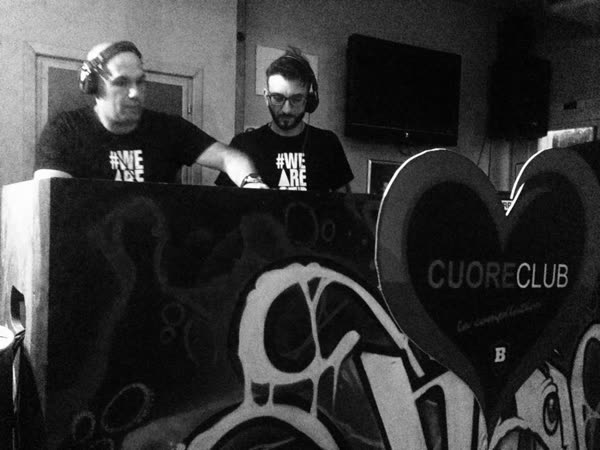
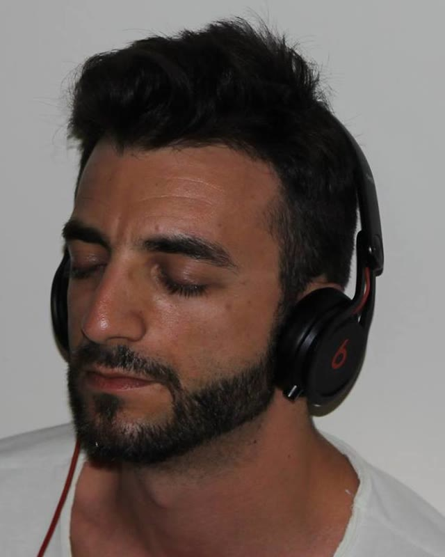

Story
1990 — 2026ELEKTROMUSIQUE wasn't always an EP. In 2013 it was his radio show. Ten years after he stopped, it's the name of his comeback.
-
1990
Violin and piano
Born in 1983, he studies violin and piano from the age of seven to twelve. Then electronic music takes over: first tracks made with Music 2000, Magix Music Maker and Fruity Loops, given away for free online and on eMule.

Behind the decks · 2003 -
2005
The first release — under the wrong name
Producer Bart Spinelli picks his track "Watch" for Technomachine Vol. 6: Generazione Androide, next to Sirol Noizer — but credits it under his real name. It's still the only track in his catalogue without his alias.
-
2013
Elektromusique on air
After years in the underground clubs of Turin and its surroundings, in July 2013 he launches the radio show Elektromusique on Radio Studio Life, and starts working with Universal Music Emotion together with Roman DJ Dookieb.

With Jazzy Trax, an episode of Elektromusique · 2013 -
2014
Lucky Wave Radio
During the show's second season he co-founds Lucky Wave Radio with Jazzy Trax, DJ Princex and Cesare Borrometi. Elektromusique goes out every Wednesday, 8 to 10 pm. Collaborations with Golden Fingers, Basterd.aka.Kim, SirolNoizer, Ricky One and Christian Express.

For Lucky Wave Radio · 2014 -
2015
Prologue, the first album
On UME Label (Universal Music Emotion): "By Night", "Eclipse", "Telemetria Verticale", "Awake", "Monday" and "Frequency Response" with Maurizio Franchi, "New Beginning" with Newsoundorder, and a remix by SirolNoiz3r. Later withdrawn from the stores. The same year he starts SKIMIKS with Maurizio Franchi.

Prologue · UME Label · 2015 -
2016
Deep Strangers
A duo born as Deep Brothers and soon renamed Deep Strangers. Ten years later, the name comes back as the fourth track of ELEKTROMUSIQUE.

Deep Strangers at Cuore Club, Casale · 2017 -
2020
The President
"The President" with Maurizio Franchi, released as DJ K-Attivo on Moonklift Records in the compilation Dark Side, Vol. 1. Then silence.
-
2026
The drawer opens
Ten years after he stopped producing, he's back: "Battito", "The Loop", "Neon Ganesha" and "Sunrise" with Jazzy Trax, "Once Upon a Time" on his own, all on Krystal Records. On November 20 comes his first EP — named after the show where it all started.

K-Attivo